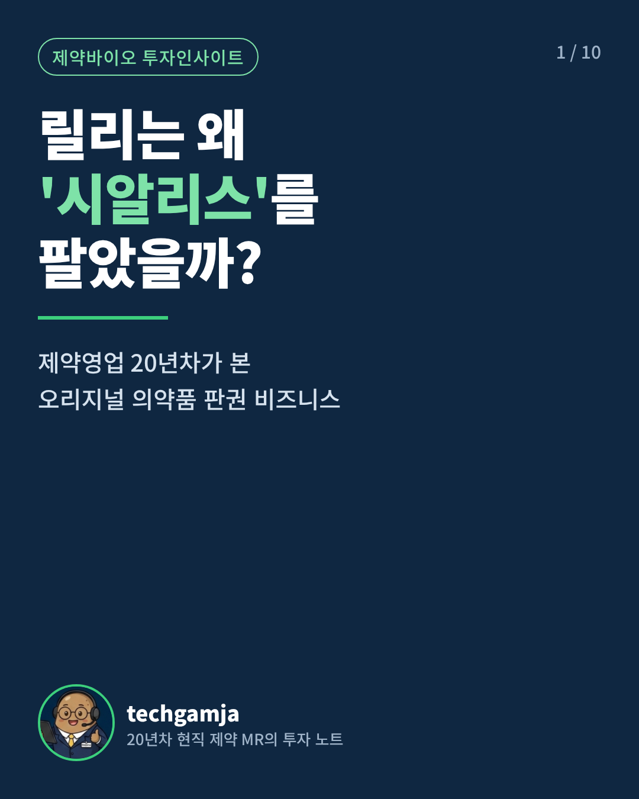
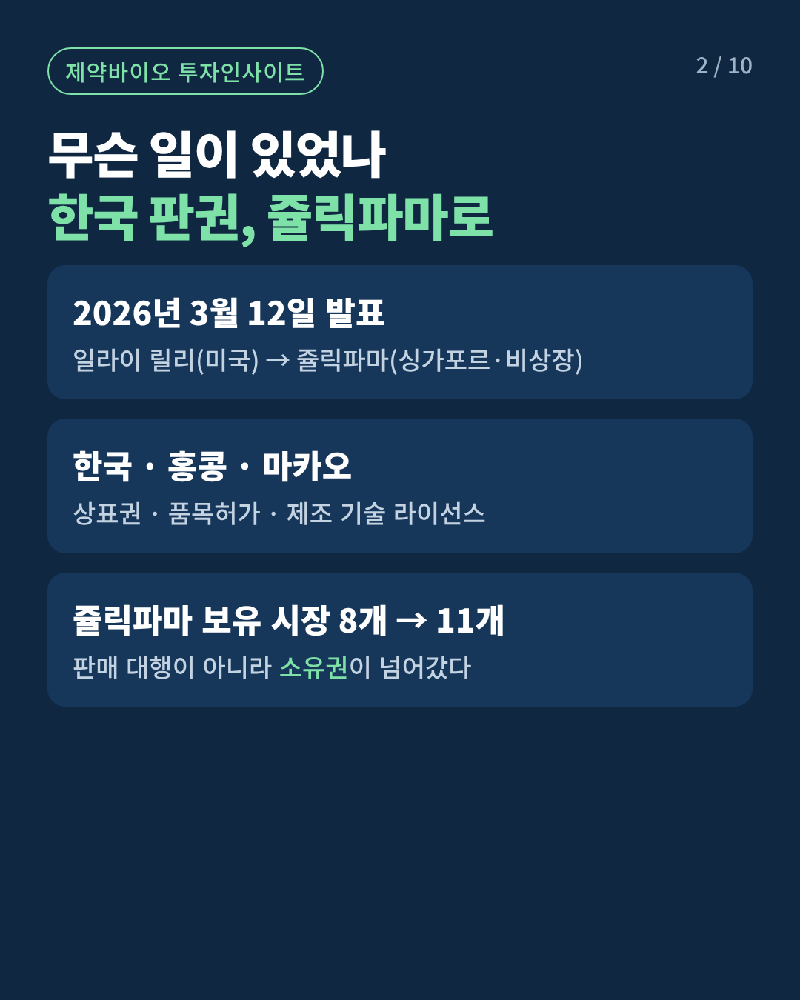
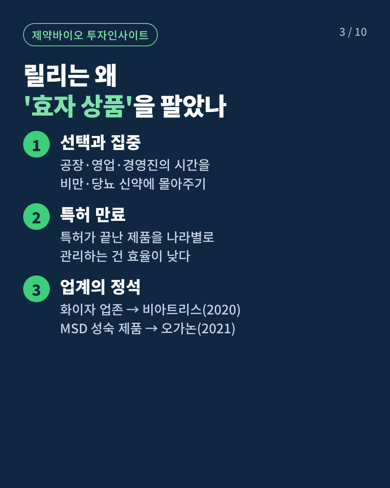
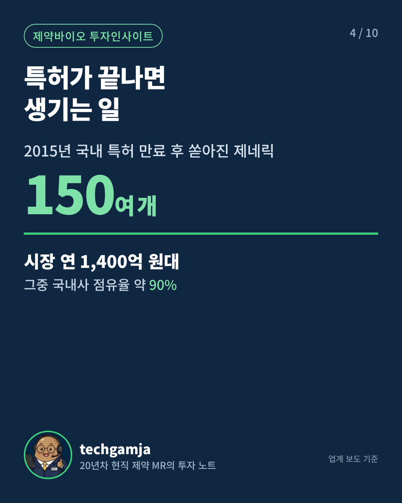
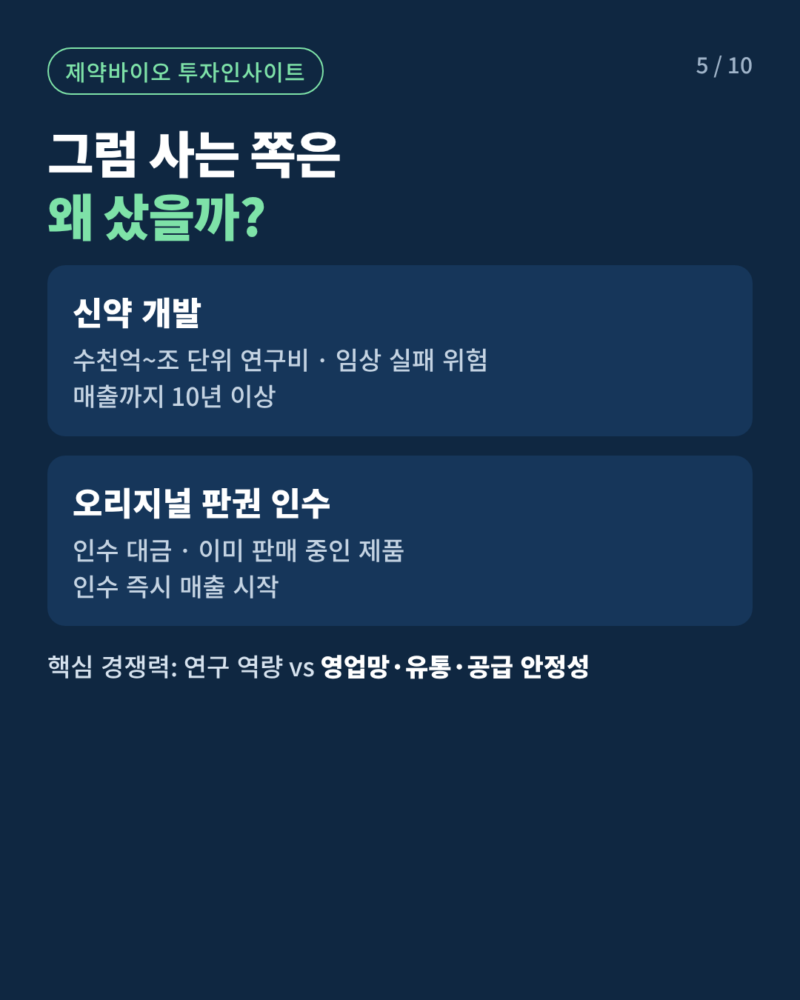
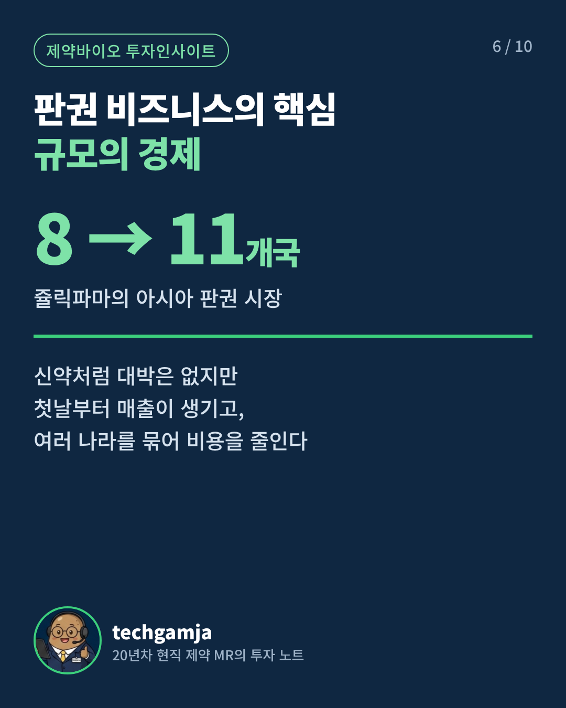
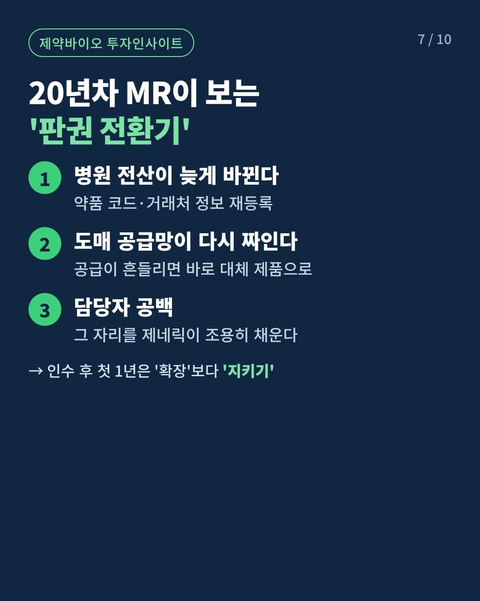
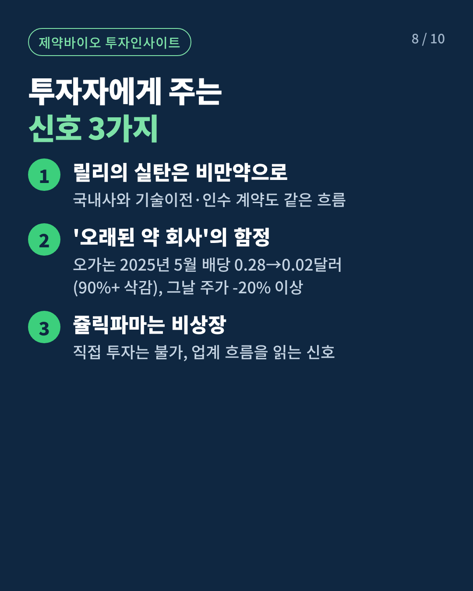
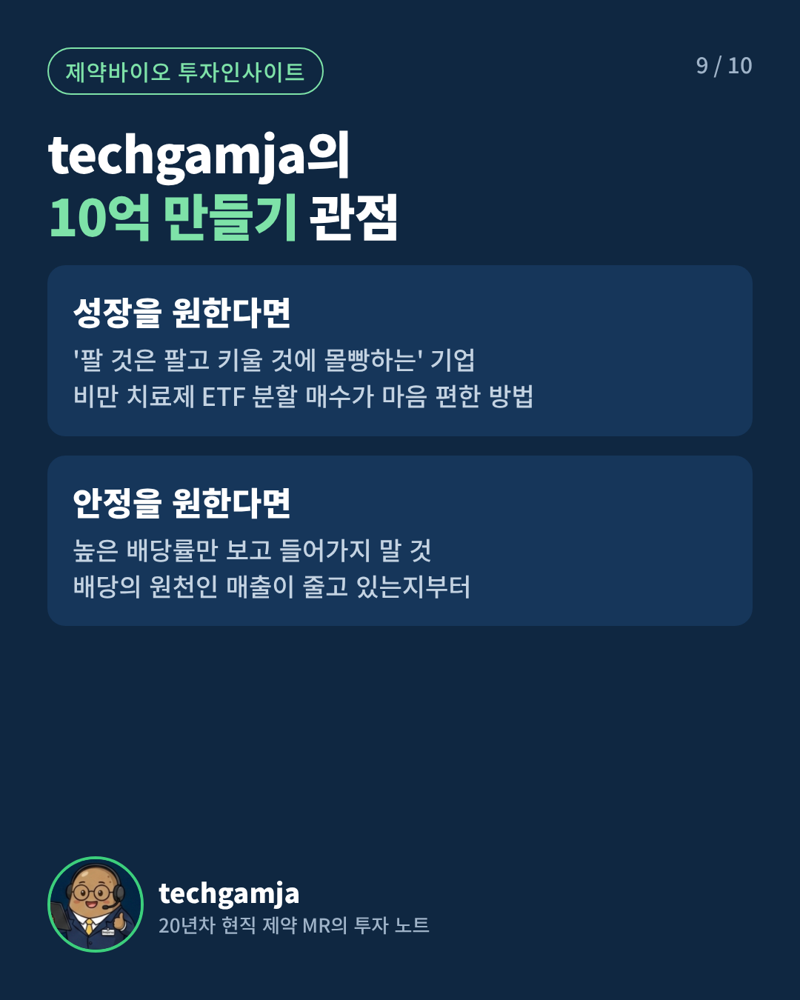
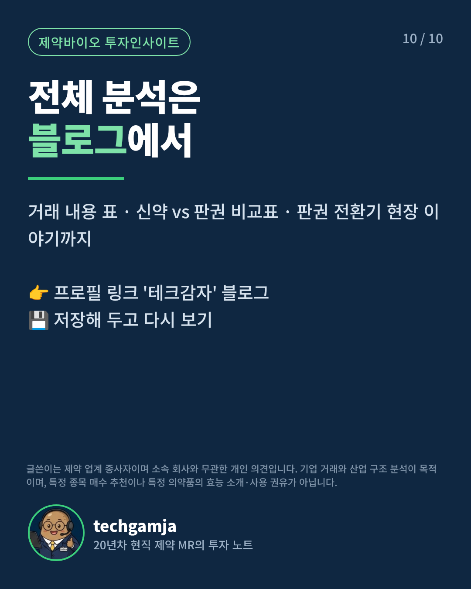

블로그 원고 그대로 만든 카드뉴스 10장(4:5)과 쇼츠 37초(9:16)예요. 쇼츠는 캐릭터를 위로 올려 제목에 가려지지 않게 했어요.
① 인스타 카드뉴스 10장 · 1080×1350
순서대로 한 게시물에 올리고, 비율은 '세로 방향'을 고르세요.










② 쇼츠·릴스 영상 · 37초
무음 영상이에요. 인스타·유튜브 안의 음악을 얹어 올리세요.
③ 카드뉴스 캡션
릴리는 왜 '효자 상품'을 팔았을까? 💊
비만약으로 세계 1위 제약사가 된 일라이 릴리가, 20년 넘게 회사를 먹여 살린 대표 제품의 한국 판권을 넘겼습니다.
✔ 2026년 3월, 한국·홍콩·마카오 판권 → 쥴릭파마
✔ 판매 대행이 아니라 '소유권' 이전
✔ 특허 만료 후 제네릭 150여 개, 국내사 점유율 약 90%
✔ 화이자·MSD도 걸어온 빅파마의 '선택과 집중'
신약처럼 대박은 없지만, 첫날부터 매출이 생기는 판권 비즈니스.
20년차 현직 제약 MR의 눈으로 정리했어요.
📌 카드를 넘겨 보고 저장해 두세요
📖 거래 내용 표·신약 vs 판권 비교표까지 담은 전체 분석은 프로필 링크 블로그에서
글쓴이는 제약 업계 종사자이며 소속 회사와 무관한 개인 의견입니다. 특정 종목 매수 추천이나 특정 의약품의 효능 소개·사용 권유가 아닙니다.
릴리는 왜 '효자 상품'을 팔았을까? 💊
오리지널 의약품 판권 비즈니스, 37초 요약!
📖 전체 분석은 프로필 링크 블로그에서
💊 20년차 현직 제약 MR의 투자 노트
※ 개인 의견이며 투자 추천·의약품 사용 권유가 아닙니다.
#일라이릴리 #판권인수 #제약산업 #빅파마 #제약바이오 #해외주식 #재테크 #릴스 #테크감자
⑤ 유튜브 쇼츠 제목·설명
릴리는 왜 시알리스를 팔았을까? 오리지널 판권 비즈니스 #shorts
일라이 릴리가 한국·홍콩·마카오 판권을 쥴릭파마에 넘긴 이유와 오리지널 의약품 판권 비즈니스의 구조를 20년차 현직 제약 MR이 정리했습니다.
전체 분석: 네이버 블로그 '테크감자' https://m.blog.naver.com/techgamja
※ 개인 의견이며 투자 추천·의약품 사용 권유가 아닙니다.
#일라이릴리 #판권인수 #제약산업 #제약바이오 #테크감자
⑥ 내레이션 대본 (선택)
0:00–0:04
릴리는 왜 시알리스를 팔았을까요?
0:04–0:09
올해 3월, 한국·홍콩·마카오 판권이 쥴릭파마로 넘어갔습니다.
0:09–0:13
판매 대행이 아니라 상표권과 품목허가까지, 소유권이 넘어간 거예요.
0:13–0:18
특허가 끝난 뒤 국내에는 제네릭이 150개 넘게 쏟아졌고요.
0:18–0:23
릴리는 공장과 영업, 경영진의 시간을 비만약에 몰아주기로 한 겁니다.
0:23–0:28
사는 쪽은 첫날부터 매출이 생기고, 8개국에서 11개국으로 규모를 키웠죠.
0:28–0:33
다만 오래된 약 회사의 함정도 있습니다. 오가논은 배당을 90% 넘게 줄였어요.
0:33–0:37
20년차 제약 MR의 전체 분석은 프로필 링크 블로그에서 확인하세요.
릴리는 왜 시알리스를 팔았을까요?
올해 3월, 한국·홍콩·마카오 판권이 쥴릭파마로 넘어갔습니다.
판매 대행이 아니라 상표권과 품목허가까지, 소유권이 넘어간 거예요.
특허가 끝난 뒤 국내에는 제네릭이 150개 넘게 쏟아졌고요.
릴리는 공장과 영업, 경영진의 시간을 비만약에 몰아주기로 한 겁니다.
사는 쪽은 첫날부터 매출이 생기고, 8개국에서 11개국으로 규모를 키웠죠.
다만 오래된 약 회사의 함정도 있습니다. 오가논은 배당을 90% 넘게 줄였어요.
20년차 제약 MR의 전체 분석은 프로필 링크 블로그에서 확인하세요.
주의할 점
⚠ 이해관계 표시: 앞서 쥴릭파마와 관련된 업무를 하신다고 말씀하셨어요. 쥴릭파마가 이번 거래의 인수 회사라서, 소속이나 거래 관계가 있다면 캡션에 "글쓴이는 거래 당사자와 업무상 관련이 있습니다" 같은 한 줄을 넣고, 회사의 SNS 활동 규정도 먼저 확인하세요. ⚠ 전문의약품 광고 규제: 제품명은 거래 대상을 설명할 때만 쓰고, 효능·용법이나 약 사진은 넣지 않았어요. 같은 이유로 제품명 해시태그도 뺐어요. ⚠ 쇼츠 안전 구역: 이번 영상부터 캐릭터와 글씨를 화면 아래 3분의 1 위로 올렸어요.